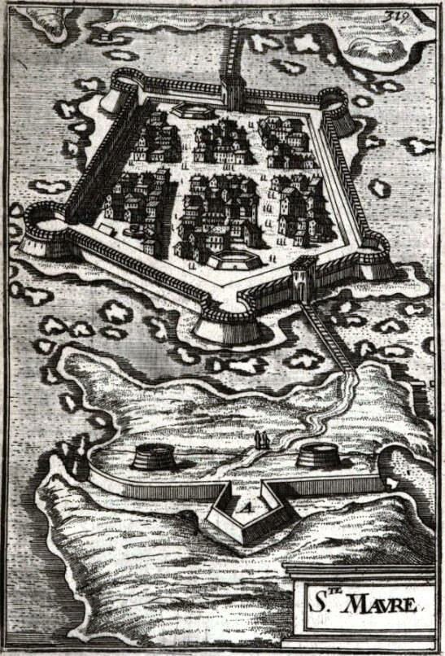

Улудж Али: возвращение
Так в дни воинственные Рима,
Во дни торжественных побед,
Когда триумфом шел Фабриций
И раздавался по столице
Восторга благодарный клик,
Бежал за светлой колесницей
Один наемный клеветник.
М. Ю. Лермонтов. «Опять, народные витии...»
Итак, командующий южным крылом турецкого флота в битве при Лепанто бейлербей Алжира Улудж Али паша, собрав остатки своей эскадры, направился в пролив между островами Оксия и Курцолари, оставив дрейфовать в открытом море все захваченные им ранее галеры. Но корсар Улудж не был бы корсаром, если бы ушел просто так, не попрощавшись. Он приказал поднять на мачте своего корабля захваченный у мальтийских рыцарей флаг ордена святого Иоанна и прошел на виду у всего флота христиан.
Джованни Андреа Дориа, на которого планом баталии была возложена обязанность уничтожить эскадру Улудж Али, рвался, как пишут некоторые историки, в погоню за уходящим противником, но, посоветовавшись с другими командирами христианских соединений, в частности с папским адмиралом Колонной и его капитаном Ремегассо, отказался от этой идеи. Поднимался сильный ветер, давление быстро падало, что грозило штормом с наступлением ночи. Вместо Дориа за Улуджем был послан небольшой отряд под командой Онорато Каэтани с целью отслеживать дальнейшие действия алжирца. Было 7 октября 1571 года. Два часа тридцать минут после полудня.
Данные о маршруте, которым следовали остатки турецкого флота после сражения при Лепанто, противоречивы. Связано это с тем, что Улудж уходил под парусами, а точных данных о направлении ветра в тот момент не сохранилось. Некоторые историки пишут, что он сразу же пошел в пролив между островами, как мы написали выше, другие утверждают, что первоначально Улудж обошел корабли обоих флотов с севера, затем прошел в тыл остаткам флота Али паши, и лишь после этого в разрыв между христианскими эскадрами севера и центра повел свой отряд на запад.
По некоторым данным, Улудж Али со своим отрядом укрылся в гавани острова Св. Мавры (Лефкас) под прикрытием турецких пушек.

Укрепления острова Св. Мавры из книги Allain Manesson Mallet, Les Travaux de Mars, ou l'art de la guerre, t. III, Paris, 1684, pl. CXIV.
Когда угроза встречи с флотом христиан миновала, галеры Улудж Али перешли в Лепанто.
Известие о поражении турецкого флота в сражении при Лепанто и о тяжелых потерях дошло до судтана 17 октября 1571 года. Султан в это время находился в Адрианополе. Получив донесение, он тут же поскакал в Стамбул, где издал распоряжение, запрещающее под страхом смерти распространять какую-либо информацию о судьбе турецкого флота. Одновременно он приказал каждому санджак-бею Османской империи за два месяца построить и оснастить по одной галере. Встал вопрос о кадрах, способных управлять новым флотом. Узнав, что бейлербей Алжира с несколькими галерами избежал горькой участи остального флота, султан посчитал, что Улудж Али укрывается в корсарских гаванях Северной Африки и послал туда галиот с требованием явиться в Стамбул для объяснений. Галиот этот адресата так и не нашел, а был перехвачен Доном Хуаном де Кардона 17 ноября 1571 года.
Улудж Али между тем перебрался из Лепанто в Модон. Он еще не оправился от двух ранений в шею, полученных в бою. С собой он взял только семь галер, находящихся в относительно приличном состоянии. Остальные 25 галер его отряда были сильно потрепаны и остались в Лепанто. Все это время Улудж Али составлял донесение о битве, предназначенное для султана. Текст этого донесения сохранился в Библиотека Ватикана (Relatione dell' Usciali al Gran Turco della rotta della sua armata l’anno 1571. Cod. Barb. lat. 5367. fol. 108). Корсар пишет, что если бы он не сделал все, что в возможностях подданного султана и раба Порты, он никогда бы не посмел вновь предстать перед своим господином. И если бы потери турецкого флота были настолько велики, как об этом говорят враги Империи, он бы не имел мужества доложить о них лично султану. Состояние флота Османской империи гораздо лучше, чем флота ее христианских противников. И он, Улудж Али, готов доложить об этом султану лично во всех подробностях. Флот империи «под Вашим великим руководством и Вашим непобедимым мечом» захватил Кипр. Он подверг огню занятые неверными острова, уничтожив их жителей и захватив множество пленных. Мы, рабы султана, пишет далее Улудж, взяли и разрушили Бетимо на Крите, вернули Сопот, захватили Дулчиньо (Улцинь), Будву, Антивари (Бар), уничтожили и захватили много венецианских галер в Адриатическом море. Наконец, турецкий флот встретился с армадой христиан и «отважно сразился с ним» (l’ havemo combattuta gagliardamente). И далее (сам себя не похвалишь – никто не похвалит): «Али Паша поручил мне командование левым флангом флота. Я обратил в бегство правый фланг христиан». И хотя венецианские галеасы нанесли большой урон турецким галерам «мой господин может быть уверен, что потери его врагов не меньше, чем наши потери». (Вот, видимо, от чтения подобных донесений родилось знаменитое «врет как на войне»). Но Улудж Али говорил то, что хотел услышать султан, и не прогадал. Он тут же был назначен Kaptanıderya – Капудан Пашой, Адмиралом всего флота Османской империи и приглашен в Стамбул для триумфальной встречи. Султан лично присвоил ему новое имя Килыч – «Меч». Спустя годы после этого события известный турецкий историк Кятиб Челеби обоснует это решение султана, заявив что, когда дело касается военного флота, то лучше потерять всех солдат, чем одного командующего. История показала, что решение турецкого султана было разумным и обоснованным. Турецкий флот возродился после Лепанто.